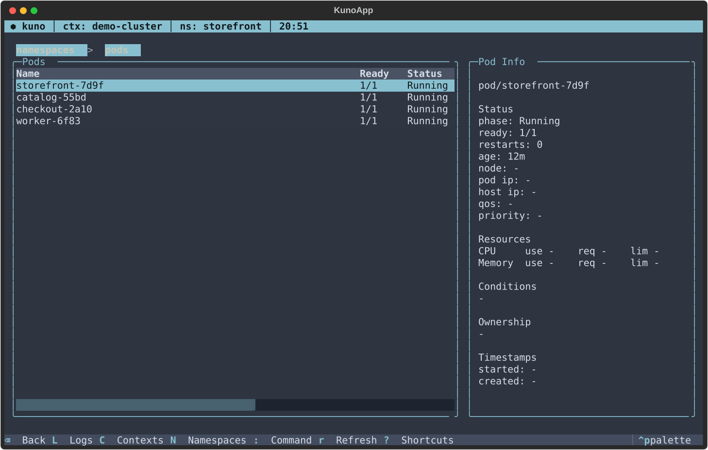
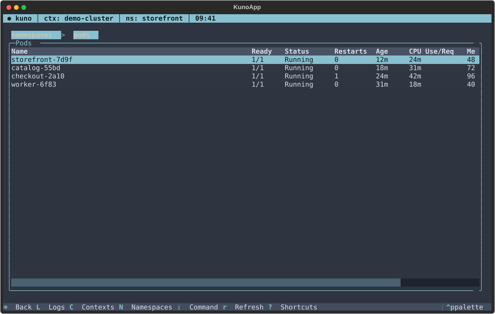
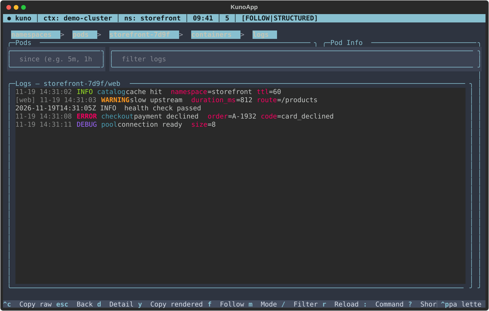
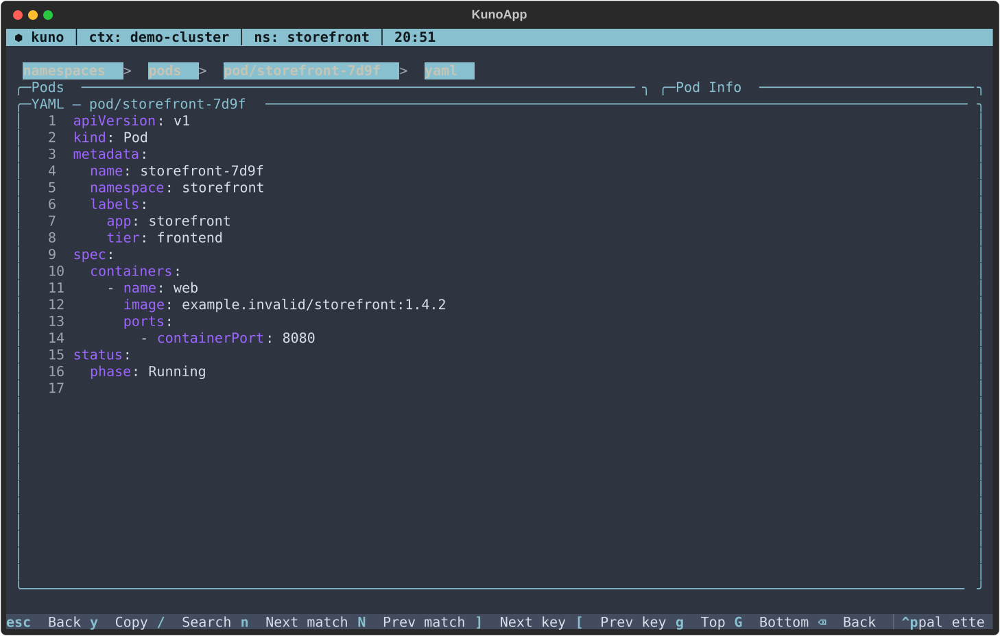

Pick a pod.
Scan pods and workloads, move with j/k, and open the selected resource with Enter.

 One keystroke.
One keystroke.Kuno is a keyboard-first Kubernetes terminal UI. Find a resource, follow its logs, and inspect what matters without leaving the terminal.
uv tool install kuno
Then run kuno in a terminal with a kubeconfig at hand.
A tiny, local-only preview. Use j/k or the arrow keys, press Enter, or switch views. The sample cluster is fictional; nothing connects to Kubernetes.
This is a browser mock using fictional sample data, not a live cluster.
A theme changes the terminal palette: background, surfaces, text, and state colours. Choose one to see a real capture and recolour the local demo with the same palette.
and many more
Set ui.theme in the config file or use :theme <name> inside the app. Demo data is fictional and local.

Move through the Kubernetes details you reach for most, without swapping tools or losing your place.
Scan pods and workloads, move with j/k, and open the selected resource with Enter.

Open logs for a pod or workload, filter output, and follow new lines from the same keyboard-first flow. m switches between the raw stream and the formatted one: a JSON line gets its timestamp, level, category, and fields separated out; anything else passes through untouched.


Read a manifest, check events, or open a describe view when a resource needs a closer look.


Kuno is open source under Apache-2.0. The package lives on PyPI and the code on GitHub.